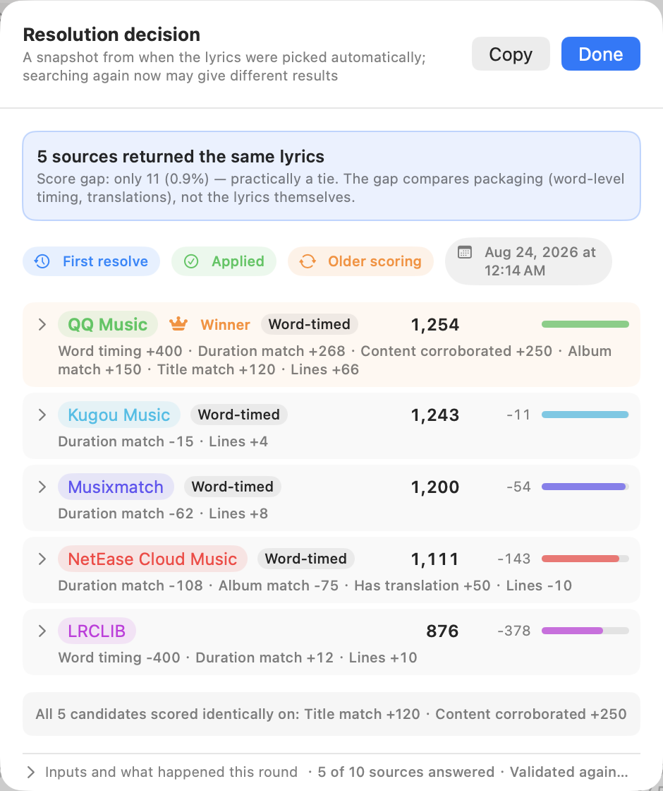

Lyrimuse 是一款開源的 Mac 桌面歌詞軟體，跟著播放逐字標亮歌詞。支援 Apple Music、Spotify、KKBOX、Amazon Music、QQ 音樂、網易雲音樂、酷狗、汽水音樂，瀏覽器裡的 YouTube Music 和 Spotify 網頁版也能用。介面有完整的繁體中文。macOS 14 以上，Apple Silicon 與 Intel 皆可。
brew tap yudaotor/lyrimuse brew trust --cask yudaotor/lyrimuse/lyrimuse brew install --cask lyrimuse
Apple Music（含電台）、Spotify、KKBOX、Amazon Music、QQ 音樂、網易雲音樂、酷狗、汽水音樂，隨意組合，或交給自動偵測。瀏覽器配對一次，YouTube Music 和 Spotify 網頁版也能用，歌詞按網頁自己的進度列走。
十二個歌詞來源的結果放在一起，按同一套標準評分，分數最高的勝出。每首歌都看得到為什麼用了這份歌詞，你手動選的會被鎖定，不會被自動換掉。配對機制 ↓
優先用歌詞來源自帶的社群翻譯，沒有就用機器翻譯，譯文有 17 種語言可選。讀音一行一行判斷：日文歌標假名，粵語歌按詞標粵拼，中文歌裡夾的那一句日文也只標那一句。
桌面浮動歌詞、瀏海下的動態島膠囊、選單列歌詞、仿 Apple Music 的完整歌詞視窗，可以同時開好幾種。字體、顏色、寬度都能調，文字顏色還能跟著專輯封面變。
一鍵連上 Last.fm，每次播放都自動記錄，沒連之前聽的也會補傳。歌手、專輯、歌曲排行榜，「足跡」分頁裡有全年熱力圖和聆聽時段。也能同步到 ListenBrainz。
GPL-3.0 開源，沒有遙測。每一筆對外請求都記進本機稽核記錄檔，想自己編譯也可以，不需要 Apple 開發者帳號。
用過多來源歌詞軟體的人，大概都碰過配到錯誤版本的情況。Lyrimuse 不會哪個來源先回傳就用哪個，而是把所有來源的候選放在同一套標準下評分：歌名、歌手、專輯、時長對不對得上，再加上有沒有逐字時間軸這類品質因素，分數最高的勝出。每首歌都有一個解析決策面板，列出每份候選的分數和贏家勝出的原因。之後要是某個來源出了更乾淨的版本，Lyrimuse 可以自動換過去；你親手選的歌詞會被鎖定，不會被自動替換。

可以。這兩家都透過 macOS 的 MediaRemote 讀取，不用給權限，歌詞一樣能顯示在桌面浮動視窗、選單列、動態島膠囊和歌詞視窗裡。如果 KKBOX 或 Amazon Music 自己已經存了這首歌的歌詞，也會拿來一起比較。Lyrimuse 不登入這兩家的帳號，也不向它們發出請求。
就像桌面上的卡拉 OK。目前這句浮在所有視窗上面，歌詞帶逐字時間軸的話，唱到哪個字就亮到哪個字，需要的話譯文或讀音跟在原文旁邊。同樣的歌詞也能放進選單列、瀏海下的動態島膠囊，或者完整的歌詞視窗。
可以。打開選單列文字模式，目前這句就顯示在選單列上，句子太長會捲動，還能多加一行顯示下一句、譯文或讀音。不用登入 Spotify 帳號。
可以。在設定裡把慣用的瀏覽器配對一次，網頁播放器就能像別的播放器一樣用，歌詞跟著網頁自己的進度列走。配對之前還能一鍵自我檢測，先看看這個瀏覽器能不能被控制。
LyricsX 最後一個版本是 2022 年 4 月的 v1.6.3，支援的系統比較舊（macOS 10.11 起）。Lyrimuse 需要 macOS 14 以上，另外支援 KKBOX、Amazon Music、QQ 音樂、網易雲音樂、酷狗、汽水音樂和瀏覽器裡的播放器，有評分挑選的歌詞配對、粵拼和日文假名，還能記錄到 Last.fm。見逐項查證過的對比（簡體中文）。
macOS 14 Sonoma 以上，Apple Silicon 和 Intel 都支援。Intel 用單獨的 universal 包，App 內的自動更新一樣有效。
找過一次歌詞的歌就能看，歌詞已經快取在你的 Mac 上了。